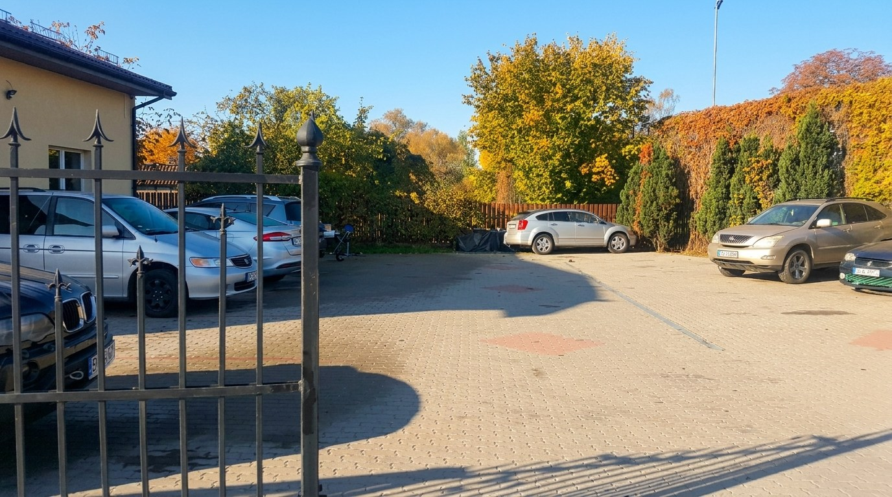

Najważniejsze atuty naszego warsztatu
Warsztat wszystkich usług i automatyczne skrzynie biegów
Nasz zakład to warsztat samochodowy świadczący pełen zakres usług mechanicznych, z wyraźnym zaznaczeniem specjalizacji w naprawie i konserwacji samochodów z automatyczną skrzynią biegów. U nas wykonasz zarówno bieżące naprawy eksploatacyjne, jak i specjalistyczne usługi, takie jak naprawa skrzyń automatycznych (DSG, tiptronic, S-tronic, MPS6 i inne), wymiana sprzęgieł suchych i mokrych, dynamiczna wymiana oleju w automatycznej skrzyni biegów, a także wymiana sprzęgieł, rozrządów, naprawa hamulców, naprawa zawieszenia oraz naprawa skrzyń manualnych.
Automatyczne skrzynie biegów i ASB
Naprawa skrzyń DSG, tiptronic, S-tronic, MPS6 oraz wymiana sprzęgieł suchych i mokrych.
Zobacz w ofercie →Dynamiczna wymiana oleju
Wymiana całego oleju w automatycznej skrzyni biegów oraz usunięcie zanieczyszczeń dla poprawy kondycji ASB.
Zobacz w ofercie →Sprzęgła, rozrządy i skrzynie manualne
Wymiana sprzęgieł oraz rozrządów, a także naprawa skrzyń manualnych w samochodach osobowych.
Zobacz w ofercie →Hamulce i zawieszenie
Kompleksowa naprawa układów hamulcowych oraz elementów zawieszenia.
Zobacz w ofercie →Warto wiedzieć o obsłudze samochodu i skrzyń biegów
Dlaczego dynamiczna wymiana oleju poprawia kondycję ASB?
Dlaczego w automatach olej pracuje w trudniejszych warunkach niż w silniku?
Sprzęgła suche i mokre w skrzyniach dwusprzęgłowych
Jeden warsztat na wszystkie naprawy mechaniczne


Dołącz do grona zadowolonych klientów
Korzystałeś z usług naszego warsztatu w Białymstoku przy ul. Tęczowej 2? Podziel się opinią w Google.
Sprawdź ofertę lub skontaktuj się z warsztatem
Zakład Mechaniki Pojazdowej Tadeusz Sielawa • ul. Tęczowa 2, 15-365 Białystok